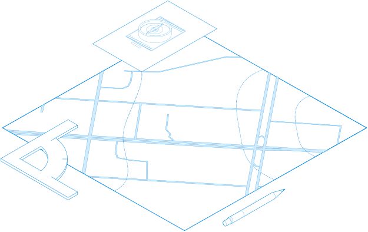

Проектные
работы
Проводим работу с объектами недвижимости, в результате которых готовятся документы, содержащие необходимые для кадастрового учета сведения

| Вид услуг | Описание | Срок выполнения | Стоимость |
|---|---|---|---|
| Раздел земельного участка | Один из способов образования земельных участков их раздела | 2-3 дня при наличии всех документов | В зависимости от ТЗ |
| Перераспределение земельного участка | Кадастровая процедура, при которой из нескольких смежных земельных участков образуется один участок. При этом исходные земельные участки прекращают свое существование | 2-3 дня при наличии всех документов | В зависимости от ТЗ |
| Объединение земельного участка | Кадастровая процедура, при которой из нескольких смежных земельных участков образуется один участок. При этом исходные земельные участки прекращают свое существование, а вновь образуемый земельный участок получает новый кадастровый номер. | 2-3 дня при наличии всех документов | В зависимости от ТЗ |
| Схеме расположения на КПТ для перераспределения между частной и муниципальной собственность (дорезка) | Кадастровая схема применяемая на осноании ФЕДЕРАЛЬНОГО ЗАКОНА от 24.07.2007 №221-Ф3 для "дорезки" прилегающей муниципальной территории. | от 30 дней. Отдел Архитектурысхемы своим ходом не проходят | В зависимости от ТЗ |
| Схема расположения на КПТ для вновь образуемого участка | Кадастровая схема применяемая на осноании ФЕДЕРАЛЬНОГО ЗАКОНА от 24.07.2007 №221-Ф3. | 2-3 дня при наличии всех документов | В зависимости от ТЗ |